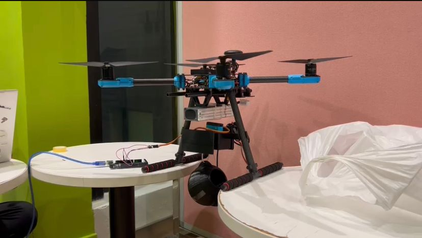

The **URIS program** at PolyU is a competitive initiative that allows undergraduate students to engage in **PhD-level research**. I conducted research under **Dr. Qixin Wang** in the **PolyU Computing Department**, working on indoor UAV localization.
Since GPS signals are unreliable in indoor environments, we developed a **sensor fusion-based navigation system** using: - **IMUs**, **ultrasounds**, and **depth cameras** - **Extended Kalman Filters (EKF)** for sensor fusion - **Stationary updates and cloud BIM-based corrections** The final results demonstrated **successful dead reckoning and localization** in complex indoor environments, significantly improving UAV autonomy.
Back to Home